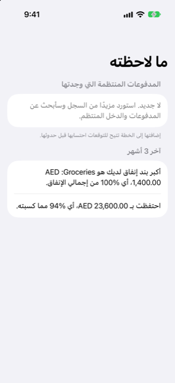

الدليل › نظرة عامة
ما لاحظته
الأنماط التي يجدها Damla في سجلّك.
ما لاحظته هي الصفحة داخل نظرة عامة التي يعرض فيها Damla الأنماط التي وجدها في سجلّك الخاص: المدفوعات والدخل الذي يتكرر، وكيف سارت آخر ثلاثة أشهر. بلمسة واحدة يمكنك تحويل ما تفعله أصلًا إلى قيود متكررة، بدلًا من كتابة كل واحد منها يدويًا.

متى تستخدمه
- كنت تسجّل منذ فترة وتريد أن يجد Damla المدفوعات المنتظمة التي لم تدخلها بعد.
- شيء يظهر باستمرار في سجلّك — اشتراك، رسم، راتب — وتريد أن يحسبه التوقّع قبل حدوثه.
- تريد ملخصًا قصيرًا لآخر ثلاثة أشهر: أكبر تكلفة عندك، وما إذا كنت أنفقت أكثر مما كسبت.
خطوة بخطوة
- افتح تبويب نظرة عامة وانقر ما لاحظته.
- اقرأ قسم المدفوعات المنتظمة التي وجدتها. كل صف يذكر اسم الجهة المستفيدة، وتحته سطر يبيّن هل قرأه Damla كـ الدخل أم كـ فاتورة، وكم يتكرر، وكم مرة شُوهد حتى الآن.
- انظر إلى المبلغ على يمين كل صف. إنه رقم واحد، أو نطاق عندما يختلف المبلغ من مرة إلى المرة التالية.
- انقر إضافة على الصف الذي تعرفه. يُضاف القيد إلى قيودك المتكررة، ومن ثمّ يحسبه التوقّع قبل حدوثه.
ينتهي القسم بالسطر "إضافتها إلى الخطة تجعل التوقّع يحسبها قبل حدوثها."
عندما لا يوجد ما يُبلَّغ عنه، تقول الصفحة ذلك: "لا جديد. استورد مزيدًا من السجل وسأبحث عن مدفوعات ودخل منتظمين." تظهر الصفوف المنتظمة كلما سجّلت واستوردت المزيد.
آخر 3 أشهر
تحت القائمة، قسم بعنوان آخر 3 أشهر يلخّص تلك الفترة من دفاترك. يذكر أكبر تكلفة عندك، بمجموعها ونصيبها من كل الإنفاق كنسبة مئوية. ثم يضيف أحد سطرين: إمّا أنك أنفقت أكثر مما كسبت، مع الفرق، أو — عندما كسبت شيئًا في تلك الفترة — ما احتفظت به، وأي نسبة كان ذلك من ما كسبته.
يظهر هذا القسم بمجرد أن يكون لإنفاقك فئة واحدة على الأقل. يقرأ الأشهر الثلاثة كلها، من بداية الشهر الذي قبل الماضي إلى اليوم، لا هذا الشهر وحده، حتى لا يُشوّه أسبوع غير عادي الصورة.
جيد أن تعرف
- لا شيء يُضاف من تلقاء نفسه. يصبح النمط قيدًا متكررًا فقط عندما تنقر إضافة. أنت تختار كل واحد.
- الصف الذي تتركه يظهر من جديد. لا يوجد زر يخفي نمطًا، لذا يعود في المرة التالية التي تفتح فيها الصفحة.
- النمط يجب أن يتكرر. يقترح Damla شيئًا فقط عندما يراه ثلاث مرات أو أكثر، بفواصل منتظمة — شهريًا، أسبوعيًا، أو كل 2 أسبوع — وكان الأخير منها حديثًا بما يكفي لتبدو مستمرة. أي شيء لديك أصلًا تحت الدخل والفواتير لا يُعرض مرة أخرى.
- النطاق يعني تقديرًا. عندما يختلف مبلغ دفعة متكررة، يعرض Damla المدى الذي رآه. تحقّق منه مقابل سجلاتك الخاصة قبل إضافته.
- القيود المضافة توجد في الخطة. يمكنك تغييرها أو إزالتها لاحقًا تحت الخطة، الدخل والفواتير، كأي قيد متكرر آخر.
- الملخص يتبع دفاترك. كلا الجزأين يُحسبان مما سجّلته. تصحيح معاملة في النشاط يغيّر ما تبلغ عنه هذه الصفحة.
- تبلغ هذه الصفحة عمّا يُظهره سجلّك، بأرقام وتقديرات. تقدّم معلومات، لا نصيحة مالية.
مواضيع ذات صلة
هل هناك شيء غير واضح أو ناقص؟ اكتب إلى support@raveniq.ai واذكر الصفحة.